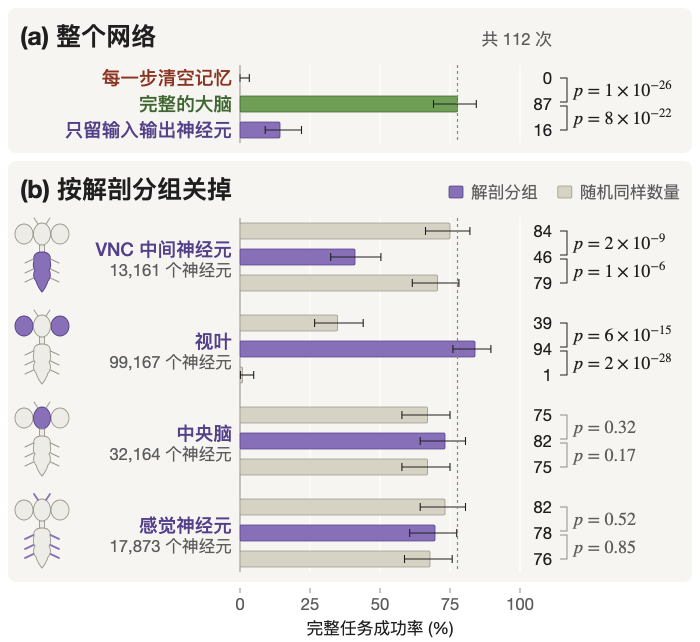

一只果蝇的完整大脑，
一根线都不改，驱动一台机械臂
我们把雄果蝇整个中枢神经系统的接线图（MaleCNS v1.0）原样放进仿真，只训练两头的接口，让这颗冻结的大脑去开抽屉、掀柜盖、把东西放上架子。下面的每个点都是一个真实神经元，亮度是它此刻的活动。
看果蝇大脑控制机械臂
任务 unpack，7 步：开抽屉，取出物体放到绿色区域，关抽屉，掀开柜盖，把另一个物体放上架子，合上柜盖。两个物体训练时都没见过。右边是同一时刻大脑里抽样的 3,200 个神经元。
亲手做一次脑损伤
同一个回合（shelve：掀开柜盖，把两个物体放上架子，合上柜盖），编码器和解码器完全一样，只改大脑。点一个条件，看机械臂和神经活动怎么变。
112 次测试的统计
训练好的控制器在 112 个测试回合上，每种损伤都和"随机关掉同样数量的神经元"在同一批回合上配对比较。误差线是 95% 置信区间，括号里是配对检验的 p 值。

VNC 中间神经元只占全脑 8%，关掉它们成功率从 78% 掉到 41%，随机关掉同样多的神经元几乎没影响。视叶占 60%，关掉反而不受影响，随机关掉同样多则会让控制器崩溃。功能落在特定的解剖结构上，和神经元数量关系不大。
原理
从观测到动作，信号只有一条路，就是穿过这颗冻结的大脑。

冻结的大脑
连接权重直接用电镜测出的突触数，神经递质决定正负号。每个控制步跑 3 次发放率模型更新，控制频率 20 Hz，用 MLX 在 Mac 上实时运行。
只训练两头
编码器（两层 256 宽的 MLP）把机械臂、物体和家具的状态写进 1,846 个上行神经元；线性解码器读 1,314 个下行神经元和 708 个运动神经元，输出末端位移、转角和夹爪开合。可训练参数 63 万。
先模仿，再强化
脚本老师示范，技能级 DAgger 在大脑控制器自己走到的状态上继续标注；然后用 PPO 加示范项微调，编码器也跟着训练，梯度只穿过大脑一个控制步。
效果
多步操作基准：抽屉，带盖的柜子和架子，垃圾桶和叠放，每个任务 3 到 8 步。每个划分 224 个全新测试回合（没见过的任务顺序是 128 个），整任务成功率。
| 控制器 | 训练过的任务 | 没见过的物体 | 没见过的家具 | 没见过的任务顺序 |
|---|---|---|---|---|
| 只模仿 | 63.4% | 64.7% | 28.1% | 17.2% |
| 模仿 + PPO（编码器和解码器） | 76.3% | 82.6% | 36.6% | 26.6% |
FrankaKitchen（D4RL 厨房基准）的四个任务在官方环境中 50 次测试全部完成，包括训练时没见过的扰动起始姿态。没见过的家具和任务顺序还很弱，是下一步要解决的。
还没做到的
- 输入是仿真里的状态，不是摄像头画面；当前子任务由任务计划给出。
- 神经元用的是抽象的发放率模型，没有模拟真实果蝇的生理细节。
- 全部在仿真中完成。主结果目前是一个训练种子，另外两个种子和打乱连接组的对照实验正在跑。
- 测得的接线是否比随机图更好学，等对照实验结果出来再下结论。